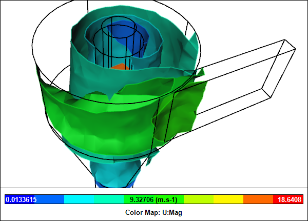

Where the action of a fluid is the primary concern in the design of a device, e.g., a cyclone, sometimes it can seem that fluid is going out of its way to be difficult - a lot like trying to herd cats. Fluid device designers have to carefully match geometry to flow rates to meet performance criteria. However, if they were to rely solely on physical testing, then their task is that much harder and more costly because they can't easily visualize the flow behavior. Let Computational Fluid Dynamics (CFD) save you money and time as a supplement to physical testing.
CFD Simulation of a CycloneVelocity iso-surfaces within the flow volume

 Get our Blog feed
Get our Blog feed